Now, we will move onto a few more features that are more advanced than the ones we have discussed so far.
ICA
ICA works differently from PCA. Instead of looking for variance, ICA looks for statistical differences between the spectral bands. It tries to separate the data into sets that are statistically independent from each other.
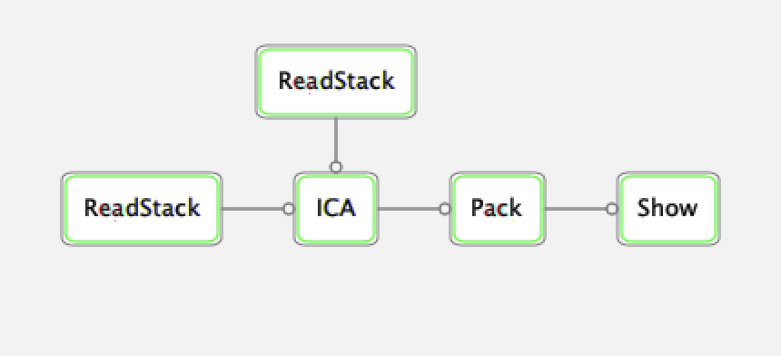
Why does this matter? Because sometimes the text we want to reveal is extremely faint, even more faint than what PCA can bring out. ICA can sometimes pull out this very subtle information.
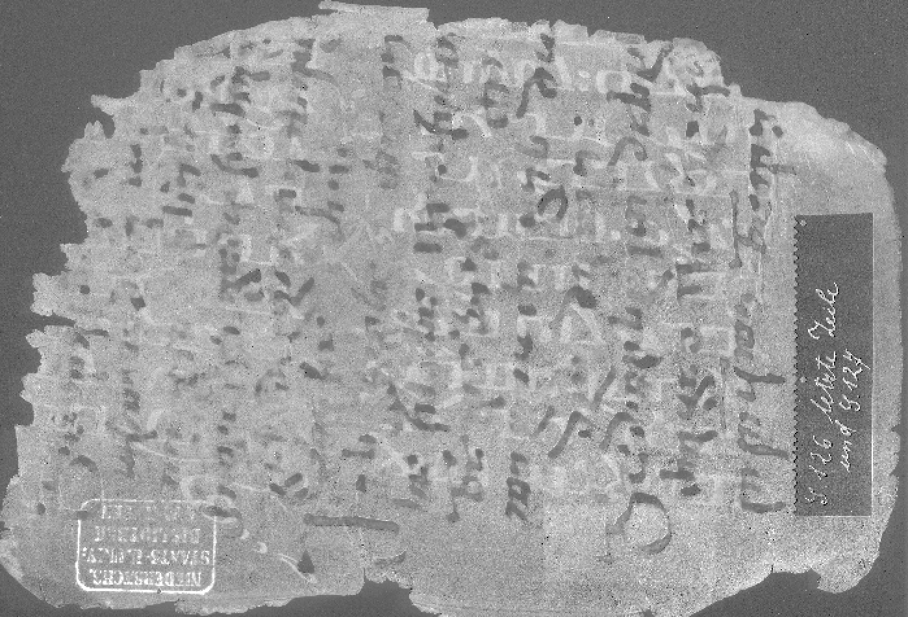
Cod. Ms. Syr. 23, fol.126a, Staats- und Universitätsbibliothek, Göttingen, processedd.
ICA takes two inputs, usually the same multiband image, just like PCA.Here’s how it works: The ROI (region of interest) image tells ICA where to look when calculating the ICA transform. The input image is where the transform will be applied. The two images must have the same number of bands, but they may be different sizes.
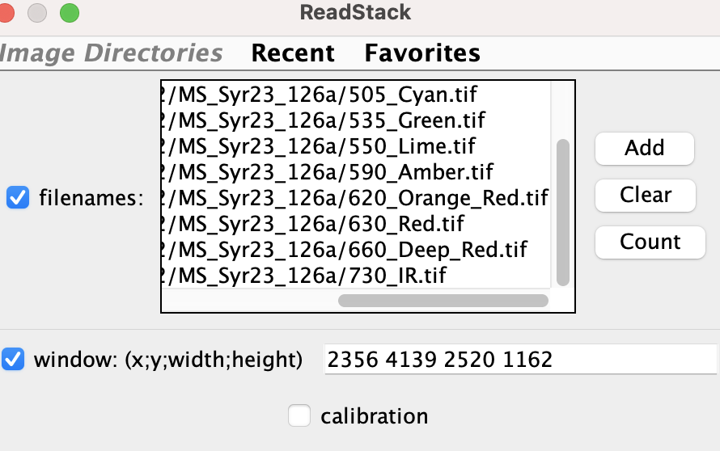
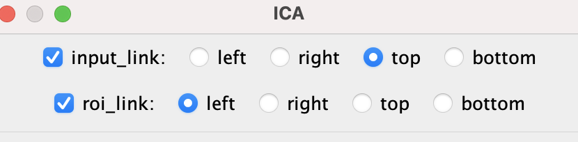
You can choose from three nonlinearities, which control how ICA separates the data.
The default option is “logcosh.” Different nonlinearities sometimes reveal different letters or features.
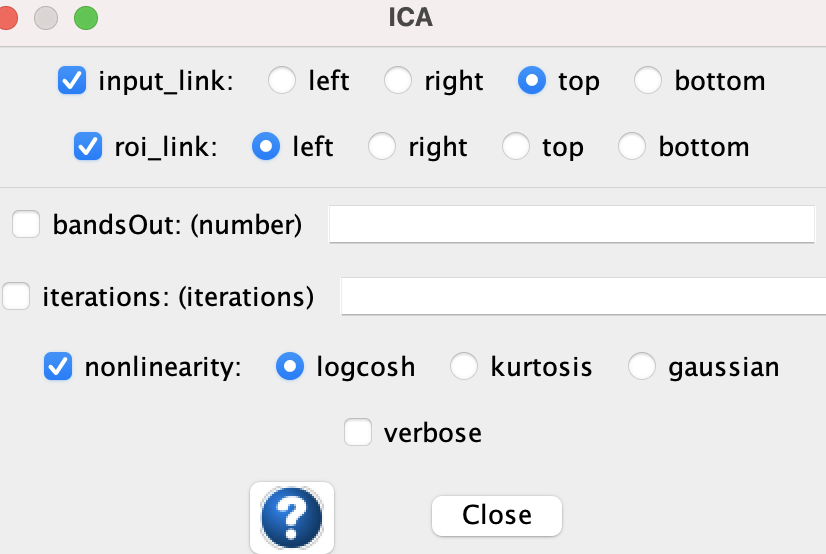
Be aware that ICA can take longer to compute when the ROI is large; the input has many spectral bands; the number of iterations is high. This is normal because ICA performs many internal calculations to find independent components.
ICA outputs the same number of bands as the input image. These bands are ordered by spatial coherence — from highest to lowest. This means the band 0 usually shows the clearest structures.
Lower-order bands (0, 1, 2…) often reveal the text, both erased and visible. Higher-order bands (near the end) usually contain less useful information
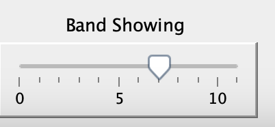
Because text has strong spatial patterns, ICA often places textual information in the early output bands.
In the “bandsOut” box, you can choose how many ICA bands to output. For example, if your image has 19 bands but you only want the first 6 ICA bands, type 6. This will output bands 0 through 5.
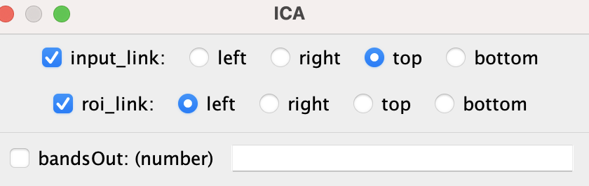
PCA
Now let’s talk about PCA, or Principal Components Analysis, a powerful tool we often use in multispectral imaging post processing. PCA helps us find patterns in the image by looking at where the biggest changes (or “variance”) occur across all the spectral bands. When PCA rearranges the data, it creates new “axes” that sort the information from most variation to least variation.
Why is this useful? Because sometimes faint or erased text has very low contrast. PCA can pull this weaker information into certain output bands, making it easier to see.
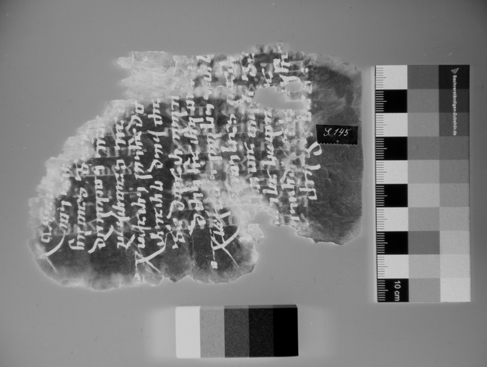
Cod. Ms. Syr. 23, fol.145a, Staats- und Universitätsbibliothek, Göttingen, processed..
PCA takes two inputs, but don’t worry: they are usually the same multiband image. Here’s what happens. The ROI image (region of interest) tells PCA which area of the image to analyze when calculating the PCA transform. For PCA, you must enter the ROI in one ReadStack only and select the ROI and input correctly. The input image is the one PCA will apply that transform to. Both images must have the same number of bands, but they do not need to be the same size.
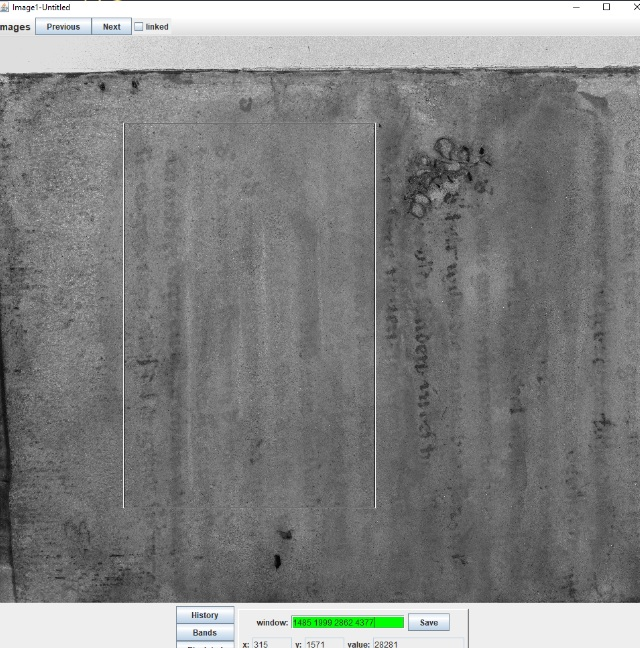
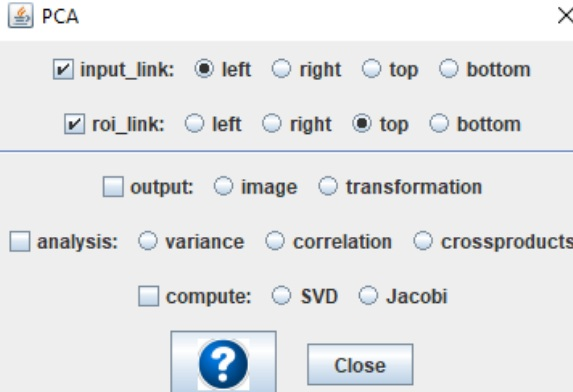
You can choose from three types of averaging, with “variance” being the default. While the results are often similar, sometimes a different averaging method may reveal slightly different characters or features.
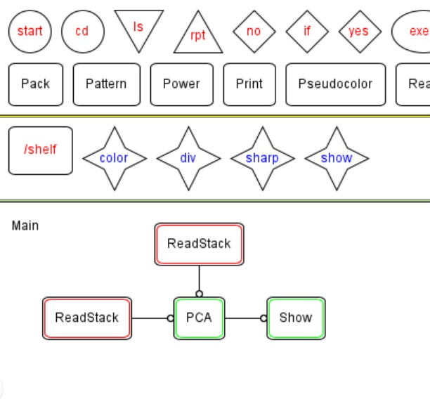
One thing to keep in mind: The more spectral bands your image has, the longer the PCA computation will take. This is normal because PCA is doing a lot of math behind the scenes.
PCA gives you the same number of output bands as the number of input bands. These output bands are sorted from band 0 being the highest variance (usually highest contrast) to band n–1 lowest variance (usually noise).
Text that is faint, erased, or damaged often appears in the higher-order bands, not the first ones. Noise usually dominates the very last band.
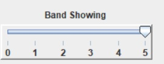
In the “bandsOut” box, you can choose how many PCA bands to output.For example, if your image has 16 bands but you only want the first 5 PCA bands, set the value to 5. This will output bands 0 through 4.
SAM
When it comes to SAM, or Spectral Angle Mapping, this feature is as significant as PCA or ICA in the post-processing phase. It is mainly used to measure the pixels similarity present in two images, where one operates as a reference. This similarity is calculated through the angular distance between the images’ same spectral values. If we were to simplify it, we can summarise it as a method that compares how each pixel’s spectrum “points” in space relative to your reference image.
In fact, this operation is useful to us since it helps unveil areas with similar material or pigment compositions, even when those differences are too subtle to be visually noticeable. In our context, opting for SAM can facilitate the identification of scraped off script, ink, erasures, or palimpsests via the comparison of the respective spectral responses.
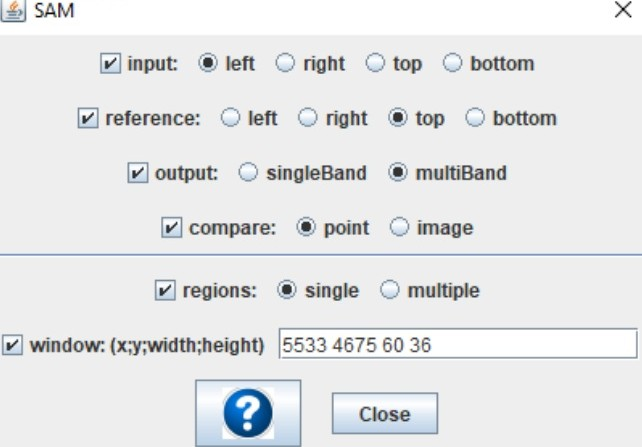
We notice that SAM, like PCA and ICA, takes two inputs: the input image and a reference image. For SAM, we must select a small region sample of damaged text for “region of interest.” Both must have the same number of spectral bands. In this regard, the reference is our point comparison where we crop a part of the image that represents our ROI Again, we can notice that the input and reference images must have the same number of spectral bands, but notice how this makes the whole process easier, especially since the workflow does not differ much from that of ICA and PCA.
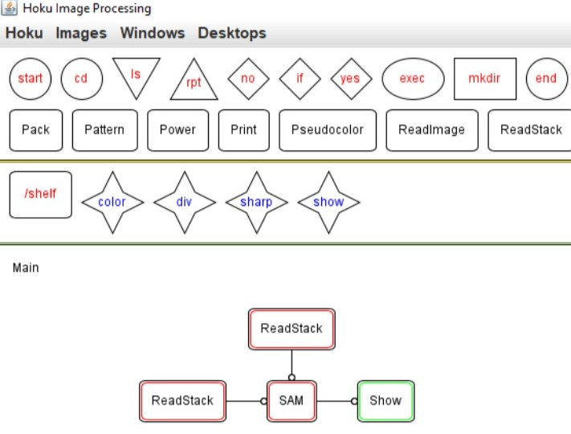
Depending on the purpose of our post-processing, we can select either one ROI or multiple as a reference. Multiple reference areas can be defined by entering multiple sets of four window parameters.
SAM averages the spectra across those windows to create one reference spectrum. If no reference window is set, SAM averages across the whole image.
Add 3 images to ReadStacks both side, avoiding baader, deep violet or violet scans. Do not enter “window”, ROI, to either files; only on SAM module, as shown above.
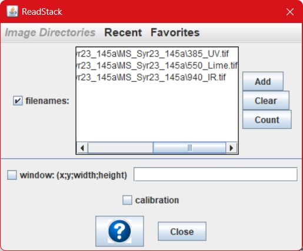
By default, SAM outputs a single-band (or what we can also call grayscale) image where each pixel represents the angular distance between the input and reference spectra.
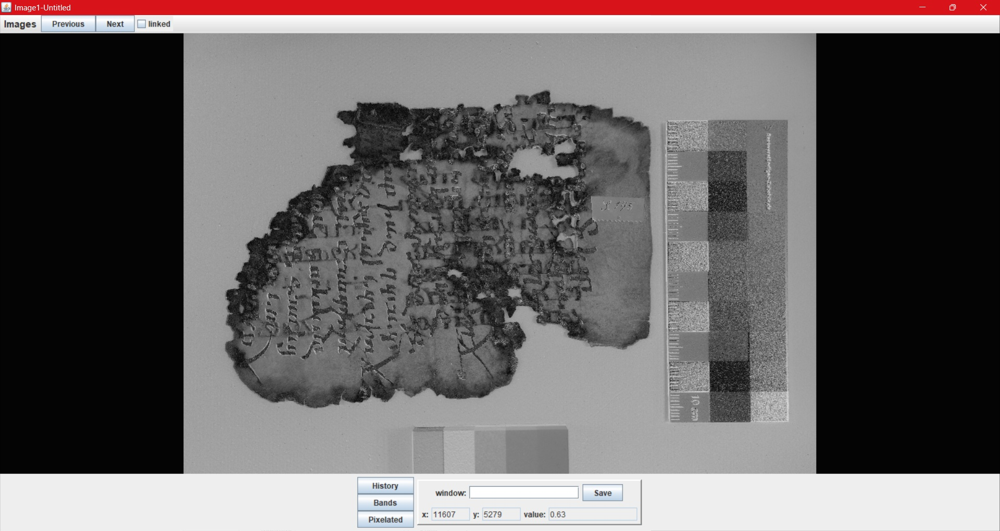
Cod. Ms. Syr. 23, fol.145a, Staats- und Universitätsbibliothek, Göttingen, processed..
If we opt for the the multi-band option, as the label indicates, we end up with a multi-band output. Each output band corresponds to a different permutation of the reference bands. For an image with N input bands, the multi-band output will contain N! (factorial) bands.
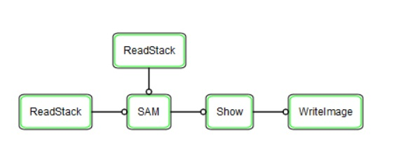
Image Math
Now let’s move to ImageMath, an effective, yet flexible feature in Hoku. As the name indicates, it performs a mathematical operation between two images, pixel by pixel. This mathematical operation can help us limit background noise, balance illumination, and amplify subtle contrasts in the multispectral data we are working with.
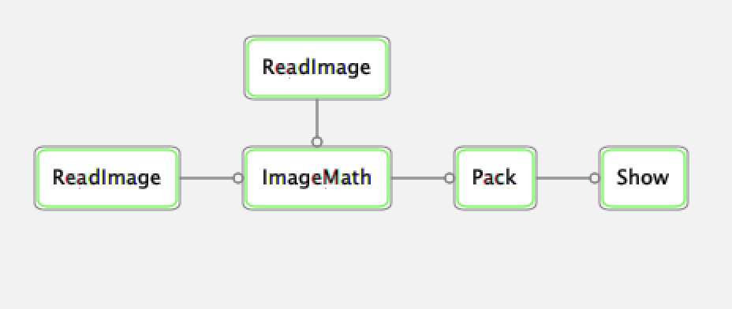
The two images function as an input one, and an operation one (op). This feature supports eight types of operations: add, sub, mul, div, max, min, mod, and atan2. Each one does determines how the two images are processed together.
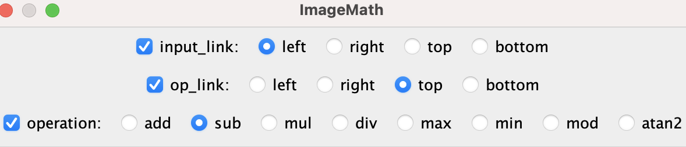
For instance, if we choose add, Hoku adds the pixel values of the two images together whereas sub subtracts one from the other. Mul multiplies them, and div divides the first (input) image by the second (operation) image. In other words, those operations perform simple arithmetic on each pixel of the two images. On the other hand, max and min take the higher or lower value for each pixel, while mod calculates (input-op)/(input+op).
Add:
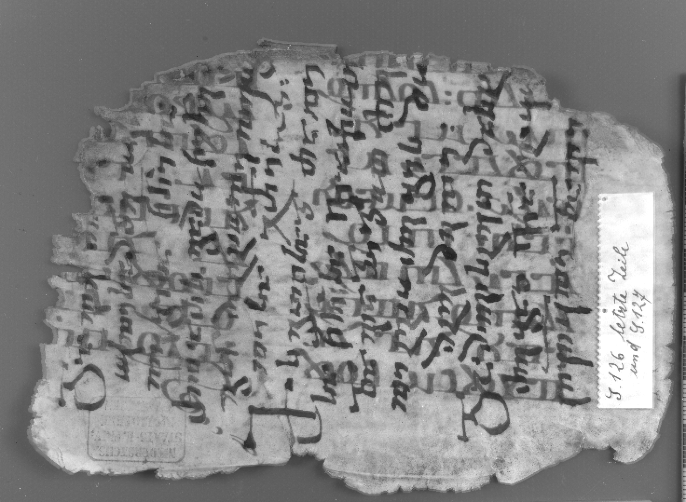
Cod. Ms. Syr. 23, fol.126a, Staats- und Universitätsbibliothek, Göttingen, processed.
sub:
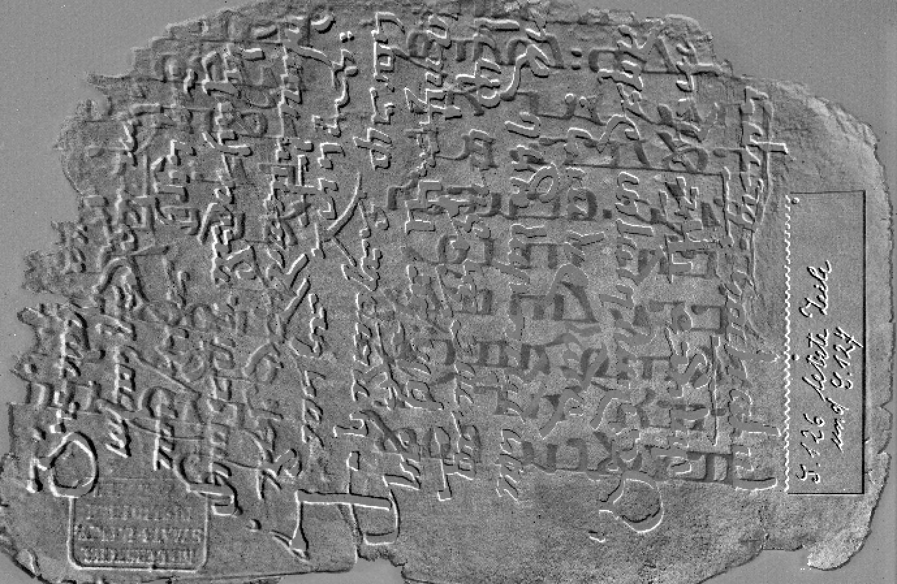
Cod. Ms. Syr. 23, fol.126a, Staats- und Universitätsbibliothek, Göttingen, processed.
Mul:
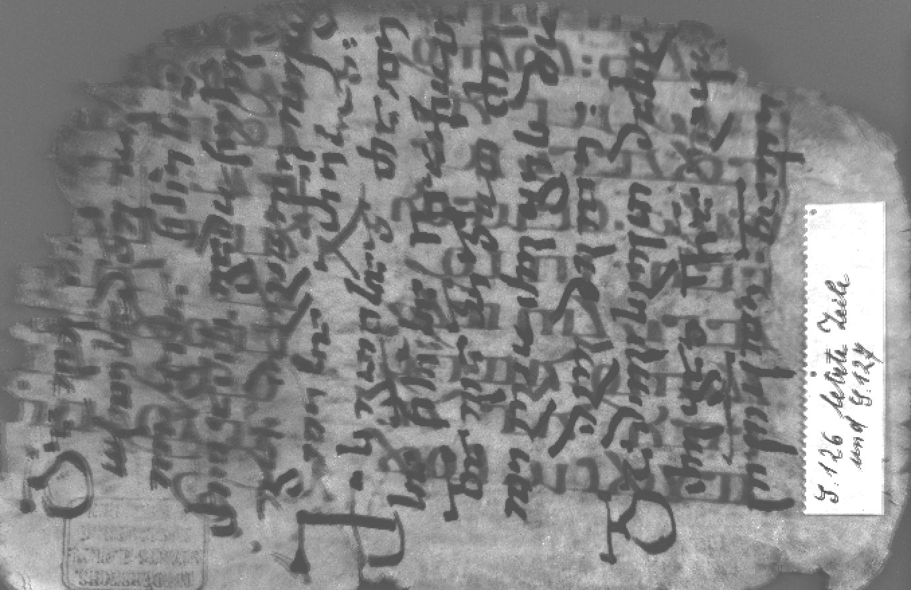
Cod. Ms. Syr. 23, fol.126a, Staats- und Universitätsbibliothek, Göttingen, processed.
Div:
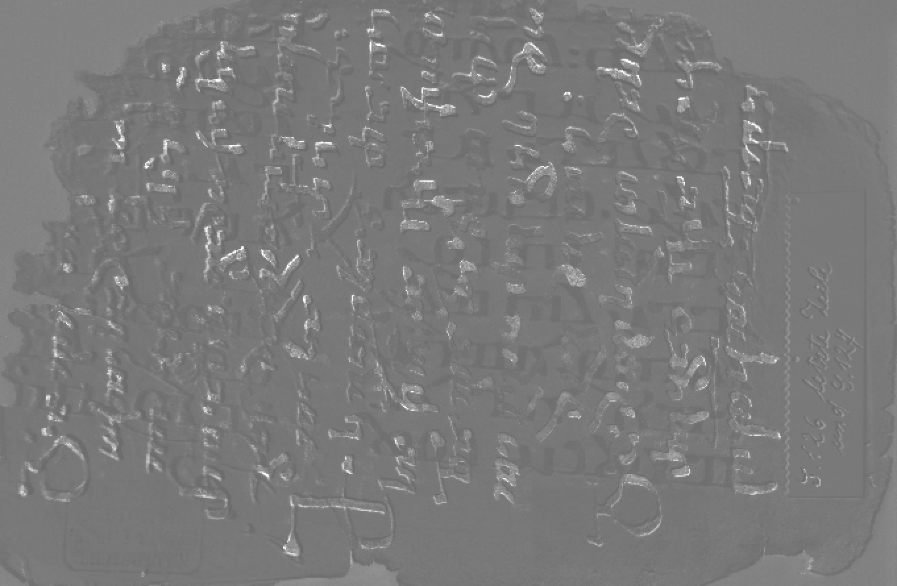
Cod. Ms. Syr. 23, fol.126a, Staats- und Universitätsbibliothek, Göttingen, processed.
Max:
Cod. Ms. Syr. 23, fol.126a, Staats- und Universitätsbibliothek, Göttingen, processed.
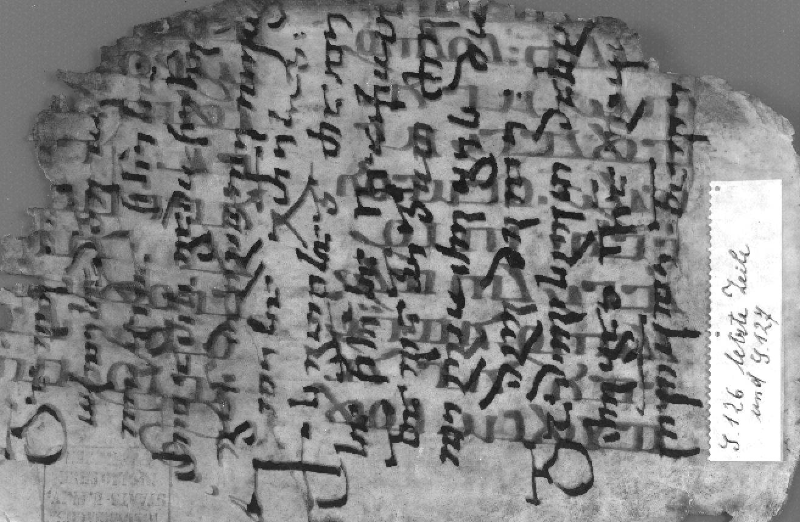
Min:
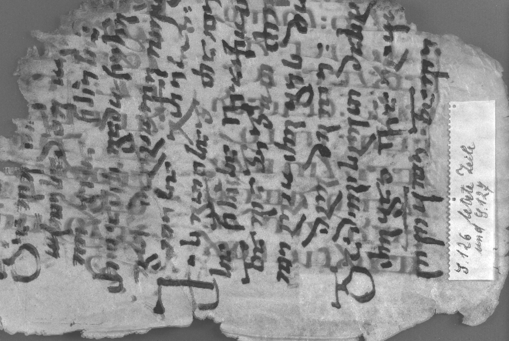
Cod. Ms. Syr. 23, fol.126a, Staats- und Universitätsbibliothek, Göttingen, processed.
Mod:
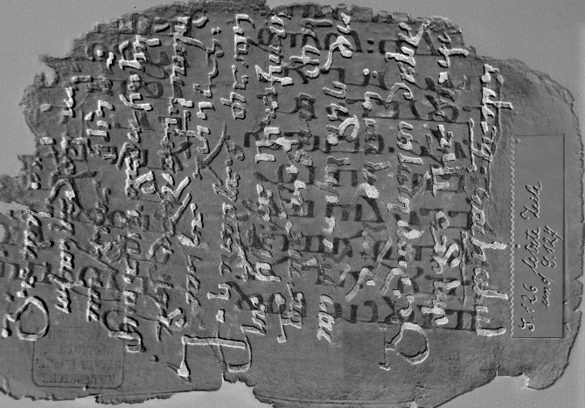
Cod. Ms. Syr. 23, fol.126a, Staats- und Universitätsbibliothek, Göttingen, processed..
When it comes to finally, atan2, this operation applies the arctangent to the ratio of the two images. This one is especially useful to our context when are working with low-contrast details, for instance revealing fading ink traces.
Atan2:
Cod. Ms. Syr. 23, fol.126a, Staats- und Universitätsbibliothek, Göttingen, processed.
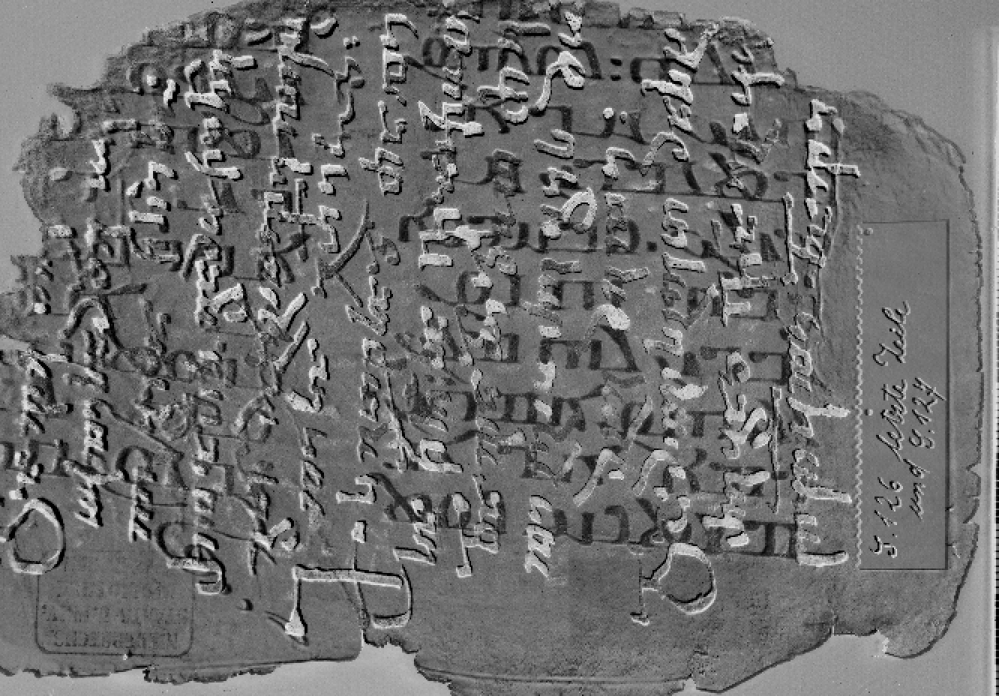
Note that when using ImageMath, we can work with multi-band images: ImageMath automatically applies our chosen operation to each band separately.
If both images (input and op) have multiple bands, we need to make sure that they have the same number of bands.
However, if one of our images has only one band, that single band will be applied across all the bands of the other image.
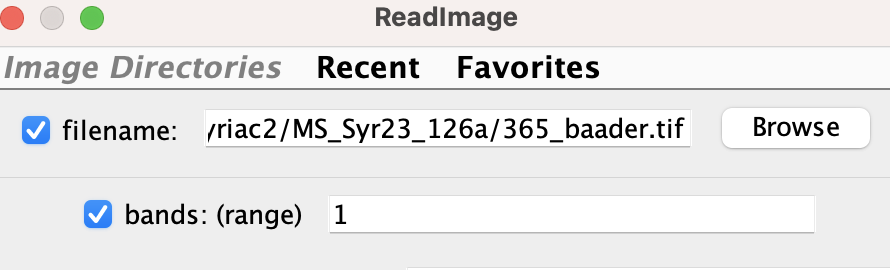
We can see that there is also an option for a scale factor in the ImageMath window: This enables us to control how much each image contributes before the operation is performed. For instance, if we insert “0.5 0.5” and choose add, ImageMath will average the two images together, band by band.
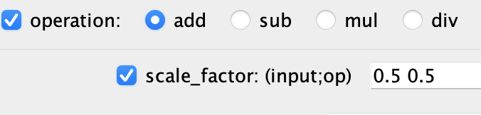
However, if we happen to have only one image to work with as an input, we can use constant values in that case as the second input image. For “add,” “sub,” and “max,” Hoku automatically assumes a default value of 0.0. For all the others (like div, mul, mod, or atan2), the default is 1.0. We can insert one constant per band, or just one number that applies to all bands.
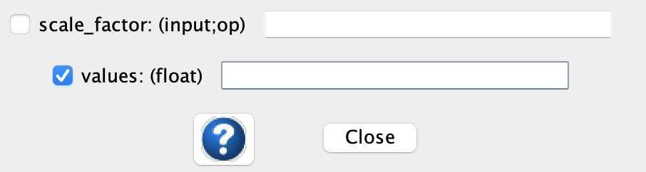
Once our operation is set, we can connect the ImageMath output to a Show or WriteImage module to see or save the result.
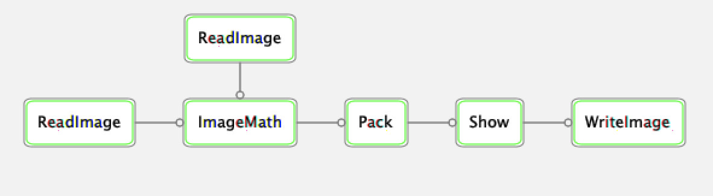
GNU Free Documentation License 1.3